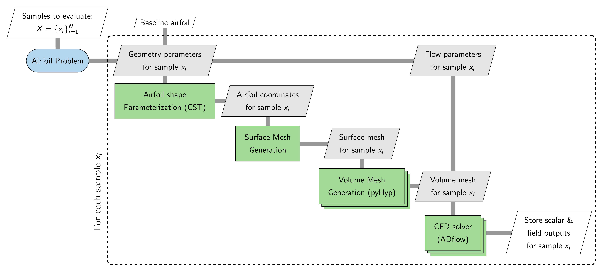

Airfoil Problem
The Airfoil problem provides an interface for generating aerodynamic datasets for airfoils using high-fidelity computational fluid dynamics (CFD) workflow. Users can parameterize both the airfoil geometry and flow conditions and evaluate the resulting configurations without manually setting up the geometry, meshing, solver, and post-processing workflow. The Airfoil problem currently uses ADflow as the CFD solver and the Class-Shape Transformation (CST) method for airfoil geometry parameterization. Additional CFD solvers, such as OpenFOAM and SU2, may be supported in future releases. The following sections describe the dependencies, computational workflow, and how to generate aerodynamic datasets with the Airfoil problem.
Dependencies
The Airfoil problem requires several additional packages that must be installed before using this problem. The required packages and their corresponding versions are listed below.
Package |
Version |
Comments |
|---|---|---|
3.1.6 |
Used for parallel processing during volume mesh generation and CFD solver execution |
|
- |
Used for monitoring child processes launched for analysis |
|
>= 1.8.4 |
Provides |
|
>= 2.6.2 |
Used for generating the CFD volume mesh from the surface mesh |
|
>= 2.8.1 |
Used for refining/coarsening the generated volume mesh, only required if you set a non-zero value for |
|
2.11.0 |
Used as the CFD solver for airfoil flow simulations |
|
- |
Used for reading, processing, and writing surface and volume field data |
|
- |
Used for creating and storing field results in HDF5 format |
Make sure that all required packages are installed with compatible versions before using the Airfoil problem.
Workflow
The Airfoil problem accepts a set of samples, where each sample contains parameter values. This set may contain a single sample or multiple samples. For each sample \(x_i\) in the sample set, the Airfoil problem performs the sequence of operations described below:
Airfoil shape parameterization: The geometry parameters are used to define the airfoil shape through CST parameterization
Surface mesh generation: The resulting airfoil coordinates are used to generate the surface mesh
Volume mesh generation: A volume mesh is generated from the surface mesh using
pyHypCFD analysis: The volume mesh and the flow parameters are passed to the
ADflowsolver to compute the aerodynamic solutionOutput extraction: Scalar and field quantities from the solver are extracted and stored in a folder
When multiple samples are provided, the workflow is evaluated for each sample, and the resulting outputs are stored separately for each sample. This allows the Airfoil problem to provide a consistent interface for generating datasets without requiring users to manually manage geometry processing, mesh generation, solver execution, or output handling.
The complete workflow is illustrated in the XDSM diagram below.


The stacked rectangles representing the volume-mesh generation and CFD analysis indicate that these operations use multiple processors through MPI. The Airfoil problem therefore abstracts the geometry processing, mesh generation, solver execution, and output handling required for each sample.
Basic usage
There are typically three main steps involved in the process of generating datasets: initializing the problem class, adding various parameters and running simulation for different parameter values. To get started with the Airfoil problem, you will need airfoil coordinates stored in a dat file. There are few important points to note regarding the dat file:
The
datfile must follow the selig format i.e. the points should start from trailing edge and go in counter-clockwise direction, and then back to trailing edge.The first and last point in the
datfile should be same (for both sharp and blunt trailing edge). This ensures that airfoil surface created using those points is closed. It is recommended to have a blunt trailing edge.The number of points and their distribution defines the surface mesh for the airfoil. So, if you want specific distribution of points (e.g. more points near leading edge), then make sure that the points are distributed accordingly.
The leading and trailing edge of the airfoil coordinates must lie on the x-axis.
All x-coordinates must be in the range of [0,1].
All files used in sections below can be found in examples directory on github.
Initializing the problem
The following code snippet shows an example of how to initialize an Airfoil problem:
# options for adflow
solver_options = {
# Common Parameters
"monitorvariables": ["cl", "cd", "yplus"],
# Physics Parameters
"equationType": "RANS",
"smoother": "DADI",
"MGCycle": "sg",
"nsubiterturb": 10,
"nCycles": 7000,
# ANK Solver Parameters
"useANKSolver": True,
"ANKSubspaceSize": 400,
"ANKASMOverlap": 3,
"ANKPCILUFill": 4,
"ANKJacobianLag": 5,
"ANKOuterPreconIts": 3,
"ANKInnerPreconIts": 3,
# Termination Criteria
"L2Convergence": 1e-14
}
from baseclasses import AeroProblem
# creating aeroproblem for defining flow conditions
aero_problem = AeroProblem(
name="airfoil", alpha=2.0, mach=0.734, reynolds=6.5e6, reynoldsLength=1.0, T=288.15,
areaRef=1.0, chordRef=1.0, xRef = 0.25, yRef = 0.0, zRef = 0.0
)
from blackbox.airfoil_adflow_cst_problem import AirfoilADflowCSTOptions
options = AirfoilADflowCSTOptions(
airfoil_file="airfoil.dat",
solver_options=solver_options,
aero_problem=aero_problem,
plot_airfoil=True,
alpha="explicit",
scalar_outputs=['cl', 'cd', 'cm'],
surface_outputs=['cp', 'cf'],
volume_outputs=['cp', 'mach'],
write_surface_output=True,
write_volume_output=True,
num_processors=4
)
from blackbox.airfoil_adflow_cst_problem import AirfoilADflowCST
airfoil = AirfoilADflowCST(options=options)
Let’s go through the code step-by-step.
First, a solver_options dictionary is created to specify the settings used by ADflow. The appropriate settings depend on the specific case being simulated, so make sure to set these options appropriately. Refer to ADflow options for more details.
Next, an AeroProblem object is created to define the baseline flow conditions for the simulation. In this example, the angle of attack, Mach number, Reynolds number, temperature, and reference quantities are specified. AeroProblem is provided by the MDOLab Baseclasses package and supports several different ways of specifying the flow conditions. Refer to the AeroProblem documentation for a complete description of the available options.
Next, the AirfoilADflowCSTOptions dataclass is initialized which provides an interface for defining various configuration options for the Airfoil problem. This dataclass consists of various pre-defined options, along with three mandatory options: airfoil_file, solver_options, and aero_problem. Refer here for a complete description of the available options. Finally, an AirfoilADflowCST object is created using the configured options. This object represents the initialized airfoil problem that provides an interface for defining various parameters and for evaluating different parameter sets.
The general initialization workflow can therefore be summarized as:
Define the ADflow solver settings using solver_options.
Define the baseline flow conditions using AeroProblem.
Creat the
AirfoilADflowCSTOptionsdataclass object using appropriate options.Create the
AirfoilADflowCSTproblem using the configured dataclass object.
Adding parameters
Next step is to add parameters that can be varied to generate datasets. The add_parameter method is used for adding parameters to the Airfoil problem. The add_parameter method requires three arguments:
name (str): name of the parameter to be added. The possible parameter names are:lower_cst: lower surface cst coefficients, thenum_cst_loweroption governs the number of CST coefficientsupper_cst: upper surface cst coefficients, thenum_cst_upperoption governs the number of CST coefficientsalpha: angle of attack of the flowmach: mach number of the flowreynolds: reynolds number for the flow
lower_bound (numpy array or float): lower bound for the variableupper_bound (numpy array or float): upper bound for the variable
Note
To add mach, alpha, or reynolds as a parameter, it must be defined as one of the arguments while creating AeroProblem object
The following code snippet shows an example of how to add parameters:
import numpy as np
# Add lower surface as a parameter
coeff = airfoil.parametrization.lower_cst # get the fitted CST coeff
lb = coeff - np.sign(coeff)*0.3*coeff
ub = coeff + np.sign(coeff)*0.3*coeff
airfoil.add_parameter("lower_cst", lb, ub)
# Add upper surface as a parameter
coeff = airfoil.parametrization.upper_cst # get the fitted CST coeff
lb = coeff - np.sign(coeff)*0.3*coeff
ub = coeff + np.sign(coeff)*0.3*coeff
airfoil.add_parameter("upper_cst", lb, ub)
# Add mach number as a parameter
airfoil.add_parameter("mach", 0.65, 0.7)
# Add alpha as a parameter
airfoil.add_parameter("alpha", 2.0, 2.5)
# Add reynolds number as a parameter
airfoil.add_parameter("reynolds", 6e6, 6.5e6)
Evaluating samples
After adding the parameters, evaluating samples is straightforward. Following code snippet illustrates how to evaluate a set of samples:
from pyDOE3 import lhs
# generate sampling plan for evaluation
samples = lhs(airfoil.bounds[0].shape[0], 10, "cm", 100)
samples = airfoil.bounds[0] + (airfoil.bounds[1] - airfoil.bounds[0]) * samples
# evaluate samples
airfoil(x=samples, return_results=False)
First, 10 samples are generated using a Latin hypercube sampling (LHS) method within a unit hypercube. You can use any sampling method of your choice to generate the samples. These samples are then scaled to the appropriate bounds for the problem. The bounds can be accessed through the bounds property of the initialized problem object. This property is a tuple containing two 1D numpy arrays: the first array contains the lower bounds and the second array contains the upper bounds.
In the code snippet above, samples is a numpy array with shape (10, 15). The 10 represents the number of samples, while 15 represents the number of parameters. Each row in samples array corresponds to a different sample, i.e., a different set of parameter values. The order of the values in each row is determined by the order in which the parameters were added to the problem. For example, in this case, the first six entries correspond to the lower CST parameters, the next six entries correspond to the upper CST parameters, and the remaining three entries correspond to Mach number, angle of attack, and Reynolds number, respectively.
The initialized Airfoil problem object (airfoil in this case) can then be called with the samples to be evaluated. The __call__ method accepts two arguments:
x (numpy array): an array of shape (N,D) or (D,) representing the samples to be evaluated. Here,Ndenotes the number of samples andDdenotes the number of parametersreturn_results (bool): a flag indicating whether the results should be returned by the function (default =False). Set this toTruewhen the results are needed directly in Python, such as during active learning. Whenreturn_resultsisFalse, the requested outputs from each simulation are stored in the corresponding sample directory.
Once the dataset generation process starts, a directory with the name specified by the directory option is created. All generated data is stored within this directory. The directory structure is organized as follows:
The main directory contains a
description.txtfile that provides information about the generated dataset, including the parameters and their bounds.A separate subdirectory is created for each evaluated sample. The subdirectories are numbered sequentially starting from
1(i.e.,1,2,3, and so on), with each number corresponding to the row of the samples array that was evaluated. For example, the directory1contains the results forsamples[0],2contains the results forsamples[1], and so on.Each sample directory contains the files generated during the simulation. Depending on the options provided during initialization, the following files may be present:
log.txt: a log file containing messages generated during mesh generation and solver executionparameters.json: a JSON file containing the parameter values used for the samplescalar_outputs.json: a JSON file containing the scalar outputs specified by thescalar_outputsoption.surface_solution.cgns: the surface solution written by the solver. This file is stored only whenwrite_surface_outputis set toTruevolume_solution.cgns: the volume solution written by the solver. This file is stored only whenwrite_volume_outputis set toTruesurface_outputs.hdf5: field data extracted from the surface solution and stored in an HDF5 file. This file is stored only whenwrite_surface_outputis set toTrue. It will contain entities provided in thesurface_outputsoptionvolume_outputs.hdf5: field data extracted from the volume solution and stored in an HDF5 file. This file is stored only whenwrite_volume_outputis set toTrue. It will contain entities provided in thevolume_outputsoptionairfoil.png: a figure showing the deformed airfoil and the baseline airfoil
Options
Following is the exhaustive list of options that can be set by the user for the Airfoil problem: